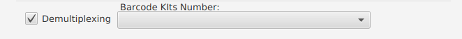

Demultiplexing Settings¶
Barcode kit [1] (Optional)¶
Choose the barcode kit(s) from the list if used.
Note
- If no barcode kit was used, leave it blank.
- Multiple selections possible.
trim_barcodes [2] (Default)¶
Note
- Trim the barcodes from the output sequences in the FASTQ files.
| [1] | (1, 2, 3) How to configure Guppy parameters https://community.nanoporetech.com/protocols/Guppy-protocol-preRev/v/gpb_2003_v1_revg_14dec2018/how-to-configure-guppy-parameters |
| [2] | Guppy update (v3.1.5) https://community.nanoporetech.com/posts/guppy-update-v3-1-5 |